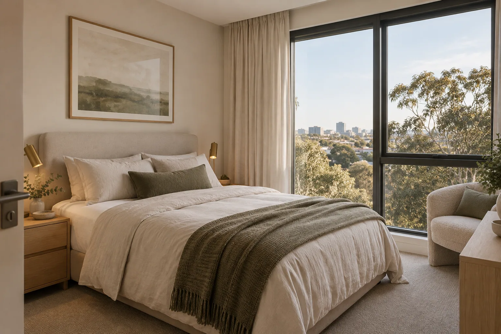
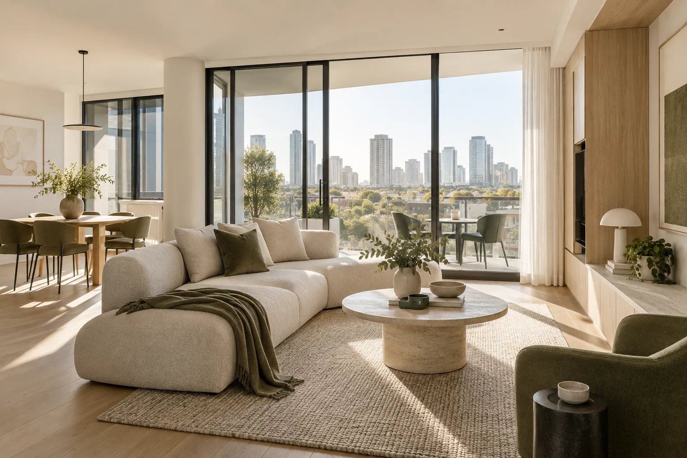

01
Relocation
Land softly while you find your longer-term home.

Extended stays
A considered base for weeks, months or the chapter in between.
More than a short stay
Comfort Base offers fully furnished accommodation for the times when a few nights are not enough. Live comfortably with the practical essentials, professional preparation and responsive support already considered.
Designed for real life
01
Land softly while you find your longer-term home.
02
A dependable base for temporary work and extended assignments.
03
Stay comfortably during renovations or between homes.
04
More room, more routine and a place that feels your own.
05
Professionally prepared accommodation for travelling team members.
06
Flexible stays with the comforts that make everyday living easier.

Everything considered
Tell us what you need
Share your dates, location and reason for staying. We’ll help you find the right base.
Extended stay FAQ
Yes. Availability and terms depend on the property and length of stay. Send an enquiry with your preferred dates.
We can discuss individual or team requirements, location, timing and stay length, then propose suitable accommodation.
Yes. Concierge assistance remains available throughout an eligible Comfort Base stay.